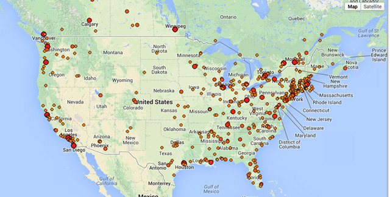

Wed, 07 May 2014 18:24:59 · music
laughingsquid recordshopsorg a user generated

Recordshops.org, A User-Generated Google Map of Record Stores Around the World
If you love scoring for vinyl, then this map is for you…
Wed, 07 May 2014 18:24:59 · music

Recordshops.org, A User-Generated Google Map of Record Stores Around the World
If you love scoring for vinyl, then this map is for you…